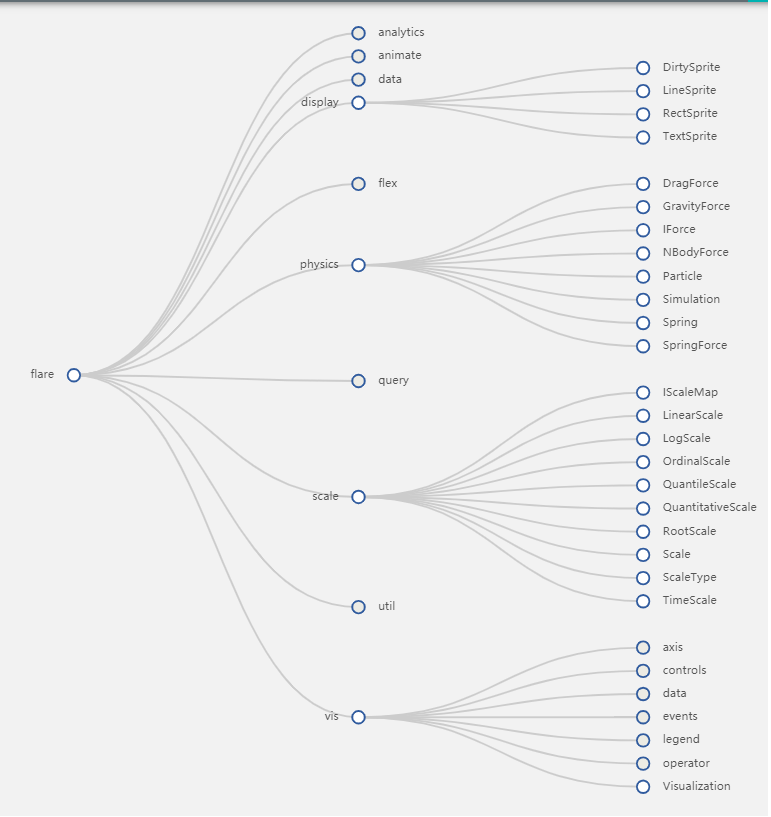

<td-layout-nav logo="assets:logobank" toolbarTitle="Agregación de Numerales">
    <button mat-icon-button td-menu-button tdLayoutToggle>
      <mat-icon>menu</mat-icon>
    </button>
    <div td-toolbar-content layout="row" layout-align="center center" flex>    
      <span flex></span>
      <!--<span></span>-->
    </div>
  
    <div flex-gt-sm="row" layout-align-gt-xs="center start" class="margin">
      <div flex-gt-sm>
        <mat-card class="push-bottom-xs" tdMediaToggle="gt-xs" [mediaClasses]="['push']">
          <mat-card-title><b>Agregación Numerales</b></mat-card-title>
          <mat-card-subtitle>Ejecución y cálculo de las agregaciones de numerales.</mat-card-subtitle>
          <mat-divider></mat-divider>
          <mat-card-content class="push-bottom-none">
            <div [hidden]="isLoading">
              
              <div layout-gt-sm="column2">
                <div flex>
                  <mat-form-field>
                    <mat-label>Seleccione Estructura</mat-label>
                    <mat-select [(ngModel)]="id" name="id">
                      <mat-option value="1">Estructura Balanza Oficial 2020</mat-option>
                      <mat-option value="2">Estructura Balanza pruebas</mat-option>
                    </mat-select>
                  </mat-form-field>
                </div>

                <div flex>
                  <mat-form-field>
                    <mat-label>Seleccione Tipo Agregación</mat-label>
                    <mat-select [(ngModel)]="idt" name="idt">
                      <mat-option value="1">IMC</mat-option>
                      <mat-option value="2">CCO</mat-option>
                      <mat-option value="3">Ambas</mat-option>
                    </mat-select>
                  </mat-form-field>
                </div>

                <div flex>
                  <mat-form-field flex>
                      <input
                          #Fecha_CorreoElement 
                          #Fecha_CorreoControl="ngModel"
                          name="Fecha_Correo"
                          matInput [matDatepicker]="picker" 
                          placeholder="Fecha Corte"
                          [(ngModel)]="Fecha_Corte"
                          format="dd/MM/yyyy">
                      <mat-datepicker-toggle matSuffix [for]="picker"></mat-datepicker-toggle>
                      <mat-datepicker #picker></mat-datepicker>
                  </mat-form-field>
                </div>
              </div>

                <div layout-gt-sm="column2">
                  <div flex>
                    <mat-form-field flex>
                        <input
                            #Fecha_InicioElement 
                            #Fecha_InicioControl="ngModel"
                            name="Fecha_Inicio"
                            matInput [matDatepicker]="picker2" 
                            placeholder="Fecha Inicio"
                            [(ngModel)]="Fecha_Inicio"
                            format="dd/MM/yyyy">
                        <mat-datepicker-toggle matSuffix [for]="picker2"></mat-datepicker-toggle>
                        <mat-datepicker #picker2></mat-datepicker>
                    </mat-form-field>
                  </div>
      
                  <div flex>
                    <mat-form-field>
                        <input
                            #Fecha_FinElement 
                            #Fecha_FinControl="ngModel"
                            name="Fecha_Fin"
                            matInput [matDatepicker]="picker3" 
                            placeholder="Fecha Fin"
                            [(ngModel)]="Fecha_Fin"
                            [min]="Fecha_Inicio"
                            format="dd/MM/yyyy"> 
                        <mat-datepicker-toggle matSuffix [for]="picker3"></mat-datepicker-toggle>
                        <mat-datepicker #picker3></mat-datepicker>
                    </mat-form-field> 
                  </div>
                  
                  <div flex>
                    <mat-form-field>
                    <mat-label>Periodicidad</mat-label>
                    <mat-select [(ngModel)]="idp" name="idp">
                      <mat-option value="1">Diario</mat-option>
                      <mat-option value="2">Semanal</mat-option>
                      <mat-option value="3">Mensual</mat-option>
                      <mat-option value="4">Trimestral</mat-option>
                      <mat-option value="5">Semestral</mat-option>
                      <mat-option value="6">Anual</mat-option>
                    </mat-select>
                    </mat-form-field>
                  </div>
              </div>
              
            </div>
          </mat-card-content>
          <mat-card-actions>
            <button flex mat-raised-button color="accent" [disabled]="" (click)="loadBalanza()">Calcular</button>
          </mat-card-actions>
        </mat-card>
      </div>
      <div flex-gt-sm="row" tdMediaToggle="gt-xs" [mediaClasses]="['push-sm']">
        <!--<div flex-gt-sm="60">-->     
        <div flex-gt-sm *ngIf="show">    
          <mat-card>
            <mat-card-title>Balanza Cambiaria IMC</mat-card-title>
            <mat-card-subtitle>Balanza Cambiaria IMC Diara
              <a href="https://teradata.github.io/covalent/v3/#/echarts/tree/overview" target="_blank">
                
              </a>
            </mat-card-subtitle>
            <mat-divider></mat-divider>
            <treetable flex 
              [tree]="arrayOfNodesTree"
              (nodeClicked)="logNode($event)">
            </treetable>
          </mat-card>
        </div> 
  
        <div flex-gt-sm *ngIf="showCCO">    
          <mat-card>
            <mat-card-title>Balanza Cambiaria CCO</mat-card-title>
            <mat-card-subtitle>Balanza Cambiaria CCO Mensual</mat-card-subtitle>
            <mat-divider></mat-divider>
            <treetable flex 
              [tree]="arrayOfNodesTree2"
              (nodeClicked)="logNode($event)">
            </treetable>
          </mat-card>
        </div>  
      </div>
    </div>
  
    <td-layout-footer>
      <div layout="row" layout-align="start center">
        <span class="mat-caption">Copyright &copy; {{year}} Teradata. All rights reserved</span>
        <span flex></span>
        <!--<mat-icon class="mat-icon-ux" svgIcon="assets:teradata-ux"></mat-icon>-->
      </div>
    </td-layout-footer>
  </td-layout-nav>
  